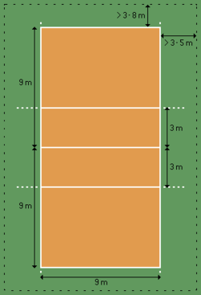

Volleybal wordt gespeeld op een veld van negen meter breed en achttien meter lang. Geen zorgen die achttien meter wordt in tweeën gesplitst door een net. Aan elke kant van het net staat een team van zes spelers. Het spel begint met een service. Een van de teams serveert de bal over het net; het andere team mag de bal drie keer aanraken voordat het terug moet worden gespeeld naar de tegenpartij. Je kan een punt scoren als de bal de grond raakt bij de tegenstander of als de tegenstander een fout maakt. Per wedstrijd worden er vier sets gespeeld.
Regels
Een set bij volleybal is afgelopen als een van de teams 25 punten heeft. Hierbij is het wel belangrijk dat er twee punten verschil tussen zitten. Een score 25-24 kan dus niet. Dan wordt er doorgespeeld tot bijvoorbeeld 26-24. Als beide teams twee sets hebben gewonnen, wordt er een vijfde set gespeeld. Deze spelen ze tot 15 punten.
De afmetingen van het speelveld zijn 9 bij 9 meter.
Belangrijkste regels:
1. Een speler mag de bal niet twee keer na elkaar aanraken, behalve bij het blokkeren.
Elk team mag maximaal drie keer balcontact achter elkaar hebben, waarbij de blokkering niet als een balcontact telt.
2. De bal mag de antennes of andere voorwerpen buiten het veld niet raken.
Het is fout als een speler onder het net dringt in de ruimte van de tegenstander en de speler de tegenstander hindert.
3. Het is ook fout als de voet(en) van een speler over de middenlijn komen, dus de speelhelft van de tegenstander raken.
4. Een team scoort een punt door de bal het veld van de tegenstander te doen raken (binnen de lijnen of op de lijn) of doordat een tegenstander een fout maakt.
5. Zodra een team een punt scoort krijgt dat team het recht van opslaan (ook wel serveren genoemd).
6. Voor het begin van een nieuwe rally (het spel vanaf de opslag totdat er een punt is gescoord) mag een speler worden gewisseld.
7. Ieder team heeft per set recht op maximaal zes wissels.
8. Een speler die is uitgewisseld mag uitsluitend voor dezelfde wisselspeler weer worden ingewisseld.
9. Samen zijn dit dus twee wissels van de maximaal toegestane zes.
10. Een speler die is ingewisseld en weer uitgewisseld, mag daarna wel weer voor een andere speler worden ingewisseld (zolang het aantal wissels niet boven de zes komt).
11. Ieder team heeft in elke set recht op twee time-outs.
12.Achterspelers mogen de bal niet over het net spelen als ze afzetten binnen de 3-meterzone en de bal zich op het moment van spelen boven de netrand bevindt.
13. Er mag geen aanvalsactie worden uitgevoerd als de libero een bovenhandse pass geeft in de 3-meterzone.
14. Een speler mag niet direct blokkeren wanneer iemand serveert.
